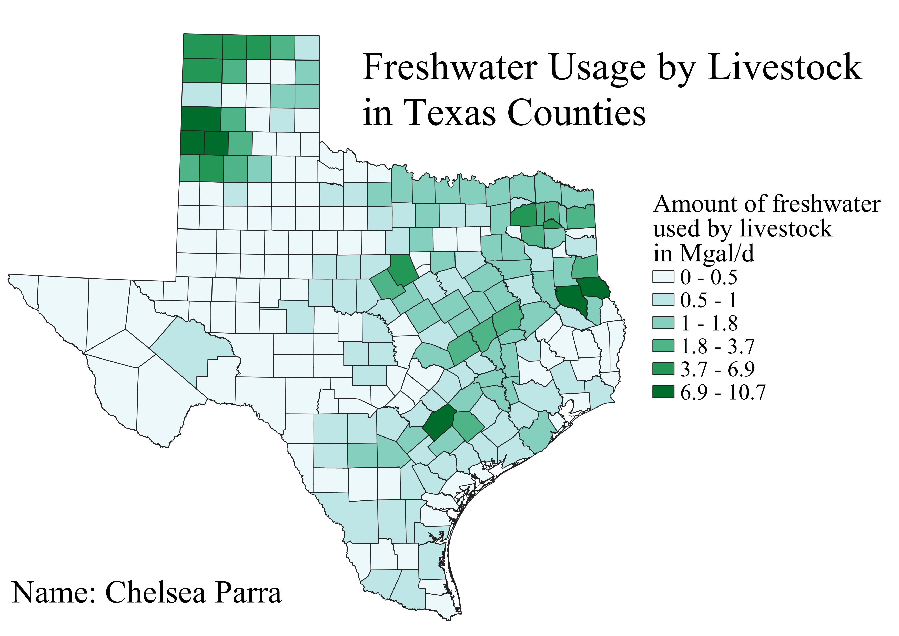

For my choropleth I chose to continue to work with data related to Texas. I was generally interested in average water usage by the counties but decided to be more specific. This choropleth shows freshwater usage by livestock in each Texas county. I knew that Texas had a good amount of cattle farming so I expected to see areas with high water uasage, however I did not know where in Texas these areas would be. It seems that the northwest portion of Texas and parts of east Texas use higher amounts of freshwater. After looking up other data to explain this pattern, I found that these higher usage areas do in fact have higher numbers of livestock.
